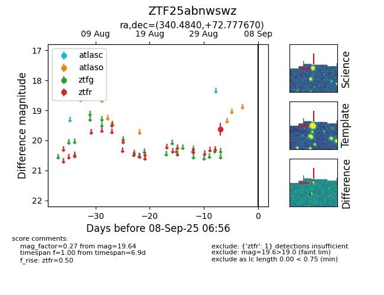

FINK: ZTF25abnwswz
Lasair: ZTF25abnwswz
ALeRCE: ZTF25abnwswz
ZTF25abnwswz (ztf,fink)
equatorial (ra, dec) = (340.4840,+72.77767)
galactic (l, b) = (113.5936,+12.29771)

last ztfr=19.64
1 ztfr detections